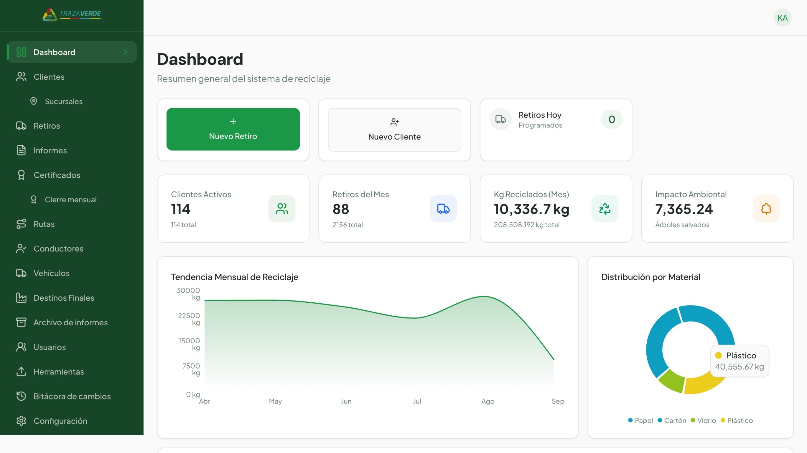

TrazaVerde centraliza retiros, materiales, destinos, reportes y certificados de tu gestión de residuos, para que nada quede disperso entre planillas, correos o documentos sueltos.
Clientes activos, retiros del mes, kilogramos reciclados e impacto ambiental, actualizados en tiempo real.

No es solo una fecha: cada retiro se asocia a los datos que realmente importan para tu trazabilidad.
Cada servicio queda con su fecha y estado de ejecución.
Qué tipo de residuo se gestionó en cada retiro.
El volumen gestionado, en kilogramos por servicio.
Dónde fue enviado el material tras su retiro.
El registro completo de los servicios realizados.
Desde el retiro hasta la disposición final.
TrazaVerde mantiene el recorrido del material después del retiro, para que tengas información verificable de su gestión.
El camión pasa según lo programado.
Queda con fecha, estado y detalle en la plataforma.
Se identifica el tipo y la cantidad gestionada.
Traslado con transporte autorizado.
Se registra dónde fue enviado el material.
Certificado disponible para tu trazabilidad.
Reportes en tiempo real para mejores decisiones: cantidad total gestionada, composición de residuos, retiros realizados y evolución de tu operación por período.
Por período, con su evolución en el tiempo.
Cuánto se gestionó de cada tipo de residuo.
Historial consolidado del período informado.
Así se ve el certificado real: instalación, período informado, residuos gestionados, kilogramos y porcentaje por material, total gestionado y ecoequivalencias.
| Residuo | Kg | % |
|---|---|---|
| Cartón | 40 kg | 40.0% |
| Papel | 25 kg | 25.0% |
| Plástico | 20 kg | 20.0% |
| Vidrio | 10 kg | 10.0% |
| Aluminio | 5 kg | 5.0% |
Complementamos lo gestionado con una representación del impacto ambiental asociado.
Qué residuos fueron gestionados, cuánto, quién hizo el transporte, dónde fueron enviados y qué documentación respalda el proceso — todo disponible cuando tu empresa lo necesite demostrar.
Control diario que se consolida mes a mes: cada retiro individual alimenta la información acumulada, el reporte del período y el certificado final.
Retiros, materiales, destinos, reportes y certificados — centralizados y listos para cuando los necesites.
Contáctanos